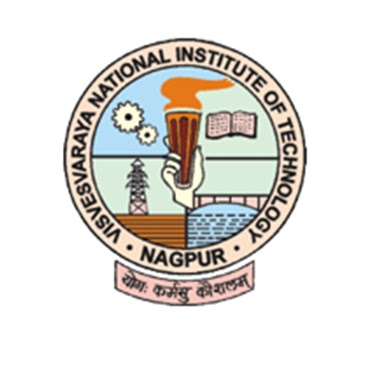
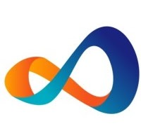

Krishna Sirugudi is a quirky and smart Delivery Lead at Acuity Knowledge Partners who has been working there since January 2023. Prior to that, he was a Design and Growth Manager at Material Depot (YC W22) for one year. He has also worked as a Director of Design, Content & Ops at UNI for two years and eight months. Krishna has a wealth of experience in wireframing, user-centered design, user research, user interface design, user flows, user experience writing, user experience (UX), prototyping, interaction design and information architecture. He has completed his Bachelor of Architecture degree from Visvesvaraya National Institute of Technology.

Visvesvaraya National Institute of Technology
Bachelors of Architecture (B.Arch), Architecture
Grade: 8.79 / 10

Delivery Lead - BEAT User Experience
Acuity Knowledge Partners · Full-time
Jan 2023 - Present · 5mos
Design & Growth Manager
Material Depot · Full-time
Jan 2022 - Dec 2022 · 1yr
Director - Design, Content Operations
Uniegis Network Pvt. Ltd. · Full-time
Sep 2017 - Dec 2021 · 4yr 4mos
Architect
Sparrow Interactive Pvt. Ltd. · Full-time
Feb 2017 - Sep 2017 · 7mos